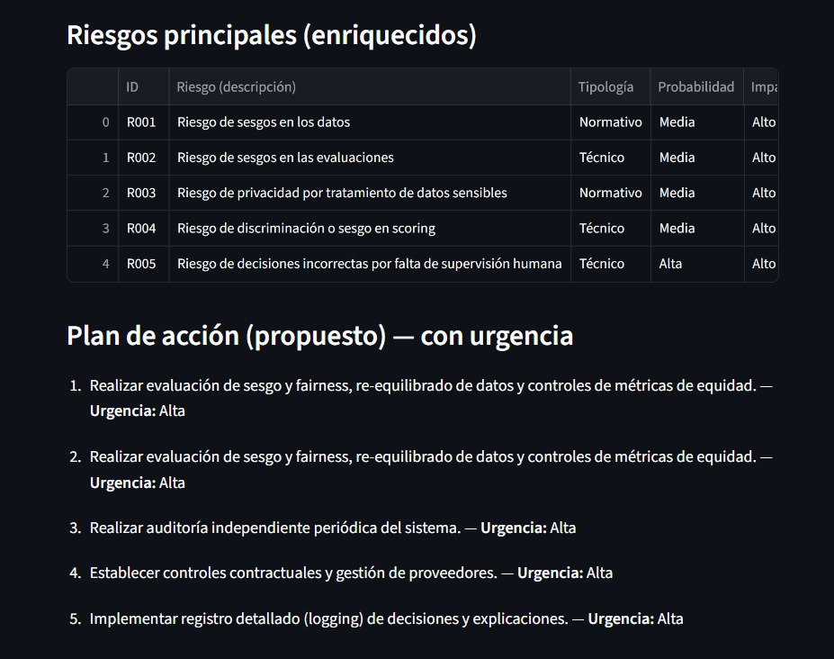

David Ricci Cambronero
Data Scientist & Analyst
Especialista en Python, R, SQL y Modelado de Machine Learning.

Transformando información compleja en decisiones estratégicas.
Cuento con una sólida base técnica en el análisis estadístico y la implementación de algoritmos de Machine Learning. Mi enfoque se centra en extraer valor de grandes volúmenes de datos utilizando ecosistemas SQL y NoSQL.
Experiencia en limpieza de datos (ETL), visualización avanzada y despliegue de modelos predictivos. Siempre buscando el "porqué" detrás de cada métrica.
Explora mi trabajo detallado en ciencia de datos y análisis estadístico.
Estudio detallado utilizando R, Tidyverse y análisis estadístico.
En este proyecto analicé la estructura de datos de productos y precios. Implementé procesos de limpieza de datos (ETL), análisis exploratorio (EDA) y generé visualizaciones clave para entender tendencias de consumo y segmentación.

Reto Andersen - LLMTHON LEGAL 2026
Prototipo desarrollado en un sprint de 48h para automatizar el pre-análisis de riesgos de sistemas de IA según el Reglamento de la UE (AI Act). El sistema evalúa riesgos normativos, técnicos y operativos aplicados al scoring crediticio financiero[cite: 42, 65].
Herramientas y lenguajes que domino para el ciclo de vida del dato.
Análisis estadístico, Pandas, Scikit-learn y Tidyverse.
Dominio avanzado de SQL y gestión de entornos NoSQL (MongoDB/Cassandra).
Modelos de regresión, clasificación, clustering y redes neuronales.
Creación de dashboards en Tableau, Power BI o librerías como Plotly y Seaborn.
Nociones de procesamiento distribuido y arquitecturas escalables.
Pruebas de hipótesis, inferencia y diseño de experimentos A/B.